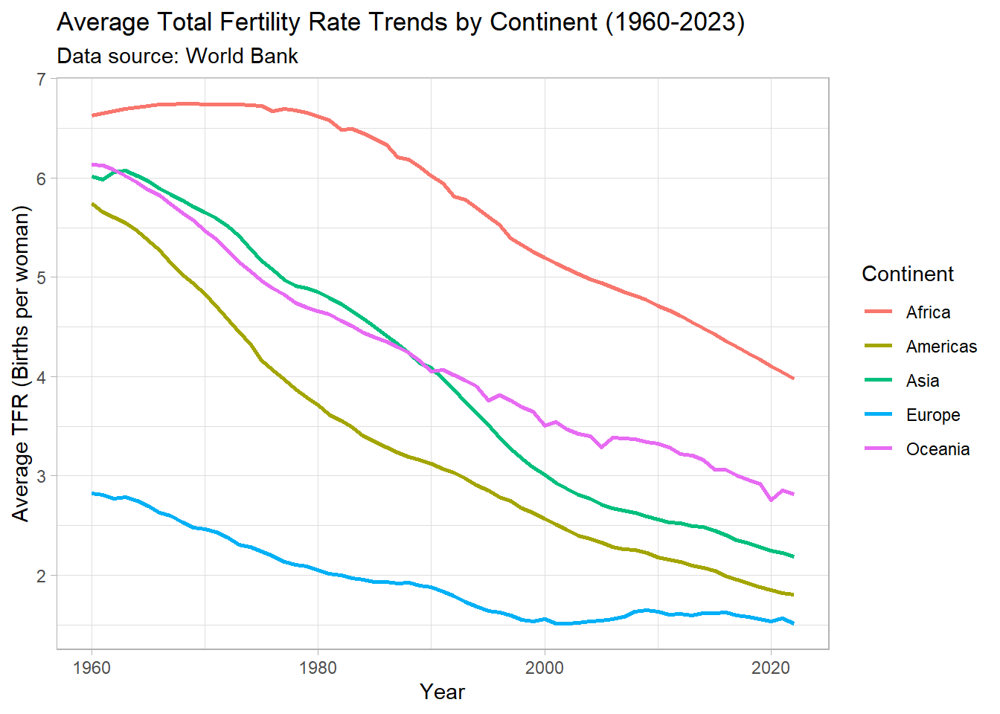
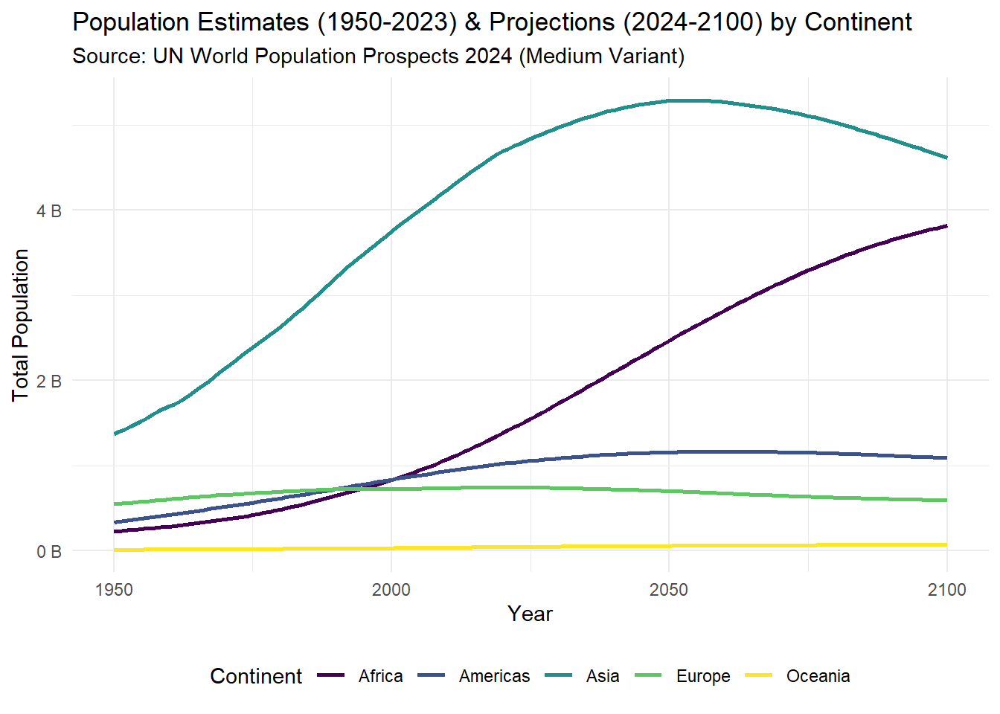

Global Population Dynamics Analysis
Part 2: Analysis - The Story of Global Population
Introduction: Asking the Big Questions
For decades, the narrative surrounding global population focused on explosive growth and the potential dangers of overpopulation. Yet, recent headlines increasingly highlight crashing birth rates and aging societies, suggesting humanity might be facing the opposite problem: demographic decline. But which story is true? This analysis delves into recent global data…
To understand this complex landscape, this report seeks answers to several key questions:
- How is the global population growing or changing overall?
- Are fertility rates declining globally, and how does this vary by continent?
- What do population projections suggest about the future demographic paths of different continents?
- What insights can the data offer regarding the concept of “overpopulation” versus emerging challenges like population aging?
- What potential factors and consequences are associated with these observed trends?
Trend 1: Falling Fertility - A Global Shift
A key driver of population change is the Total Fertility Rate (TFR), the average number of children born per woman. A rate of approximately 2.1 is needed to maintain a stable population size long-term. The following chart visualizes how this rate has evolved across continents since 1960, based on World Bank data.
The plot clearly reveals a significant global trend: average fertility rates have declined substantially across all continents since 1960. However, the magnitude and timing of this decline vary dramatically. Africa began with the highest TFR, exceeding 6.6 births per woman, and while it shows a consistent decrease, particularly after 1980, it remains significantly above the replacement level (around 4.0 in 2023) and higher than all other continents. In stark contrast, Europe started with the lowest TFR in 1960 (below 3) and steadily declined further, falling below the replacement level well before 1980 and continuing to decrease towards rates around 1.5 by 2023. Asia and the Americas experienced dramatic falls from high initial rates (around 6), crossing the replacement level threshold around approximately 2008 for Asia and approximately 2003 for Americas respectively, and converging towards lower levels by 2023 (Asia just above 2, Americas just below 2). Oceania also shows a significant decline from its peak, ending near approximately 2.8 births per woman in 2023. This widespread reduction in fertility, strongly linked to factors like increased access to education and healthcare as well as economic development, is the primary engine behind the changing global population landscape we see today.
Trend 2: Diverging Futures - Population Projections to 2100
# Make sure pop_proj_summary exists and is not NULL
if (!is.null(pop_proj_summary)) {
projection_plot <- ggplot(pop_proj_summary, aes(x = year, y = total_population, color = continent)) +
geom_line(linewidth = 1) +
scale_y_continuous(labels = scales::label_number(scale = 1e-9, suffix = " B")) + # Format y-axis in Billions
scale_color_viridis_d() +
labs(
title = "Population Estimates (1950-2023) & Projections (2024-2100) by Continent",
subtitle = "Source: UN World Population Prospects 2024 (Medium Variant)",
x = "Year",
y = "Total Population",
color = "Continent"
) +
theme_minimal() +
theme(legend.position = "bottom") # Move legend below plot
} else {
print("pop_proj_summary data frame is not available.")
}
projection_plot
# plotly::ggplotly(projection_plot)The plot clearly reveals a significant global trend: average fertility rates have declined substantially across all continents since 1960. The most striking feature, however, is the divergence led by Africa. While every continent shows a downward trend, Africa’s TFR started highest (over 6.6) and, despite falling, remains considerably higher than all others (around 4.0 in 2023), still well above the replacement level. In sharp contrast, Europe, Asia, the Americas, and Oceania have all seen their average TFR fall dramatically, dropping below or near the crucial 2.1 replacement level by the end of the period shown.
Re-evaluating “Overpopulation”
We have often been presented with the notion that unchecked population growth poses an existential threat, suggesting Earth’s resources are too scarce for humanity’s numbers. But how accurately does this reflect the current demographic reality? Across the globe, we are witnessing a profound trend of falling fertility rates [as shown in the previous TFR plot]. This decline is so significant in many areas that governments increasingly face the opposite challenge, implementing policies to encourage childbearing, with extreme examples found in countries like South Korea YouTube. Examining recent data and projections at the continental level [referencing both of your plots] reveals a picture far more complex than simple, universal ‘overpopulation’. While Africa maintains fertility rates well above replacement and is projected to experience substantial population growth through 2100, most other continents, including the currently most populous Asia, now exhibit fertility near or below the replacement level. This leads to projections where Asia’s population peaks mid-century and Europe’s stagnates or declines. Furthermore, overall global projections anticipate a peak around 2084, not endless growth [cite: https://population.un.org/]. This stark regional divergence suggests the primary demographic challenges may be shifting from universal overpopulation to managing vastly different trajectories – navigating resource and development pressures associated with rapid growth in some regions, while simultaneously addressing the economic and social consequences of population aging and potential decline in others.
Understanding the Drivers and Consequences
So, why is this big drop in fertility happening pretty much everywhere, just at different speeds, as our first plot showed? It’s not really a mystery; it generally follows a pattern experts call the demographic transition that societies tend to move through as they develop YouTube. Think of it in stages: first, living conditions improve, meaning fewer kids die young thanks to better healthcare, sanitation, and food. That’s huge, because parents realize they don’t need to have as many children just to ensure some survive to adulthood. Then, other powerful factors usually kick in. More access to education, especially opening doors for women, leads to more life choices beyond starting large families early [cite: youtube.com/2]. As countries experience economic development and people move to cities (urbanization), the old incentives change – kids are less needed for farm labor and become more expensive to raise, while access to family planning and modern contraception becomes easier. Layered on top are cultural shifts towards different life goals and maybe more individualism, plus sometimes the sheer high cost of housing and private education can act as a brake, as highlighted in the extreme case of South Korea. It’s really this combination of factors, progressing at different paces around the world, that explains the widespread downward TFR trends we visualized.
Conclusion
In conclusion, the narrative of global population in the 21st century appears far more nuanced than simple notions of ‘overpopulation’ might suggest. The data explored here clearly shows a world deep in demographic transition. While fertility rates are declining across all continents, as visualized in the TFR trends, the pace and resulting levels differ dramatically. This leads to starkly diverging future population paths, vividly illustrated by projections showing potential stagnation or decline in regions like Europe and eventually Asia, contrasted against continued, significant growth primarily concentrated in Africa. This analysis confirms that the challenges ahead are not singular; societies will grapple with distinct issues ranging from the economic and social strains of aging populations in some areas to the pressures of resource management, job creation, and infrastructure development for rapidly growing youth populations in others. Understanding these complex, regionally specific demographic shifts, rather than relying on outdated global narratives, is therefore crucial for navigating the challenges and opportunities ahead.